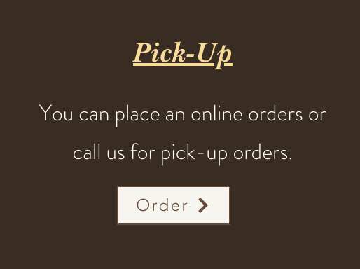

Introduction
Hi everyone! Today we will be redesigning the webpage of a local restaurant near my school called Heng Thai that features southeast Asian foods. It's a popular hub for students, but its current website has rather outdated design as well as some key accessibility issues.
Our redesign journey will follow these steps:
- Identification of issues with the current website
- Design guide & mockups for the new design
- A brief overview of the new implementation and discussion on how the new design addresses the problems we identified
Let's transform this restaurant's web presence into something as delicious as their food! üå∂Ô∏è
Original Website
Before we dive into the redesign process, let's take a look at the original website across different devices. This will help us understand how the current design responds (or fails to respond) to different screen sizes. Throughout the entire page, click on any image to see it in full size!
Laptop View
The desktop version shows all menu items at once, creating excessive scrolling.
Tablet View
The tablet layout has inconsistent element sizing and spacing issues.
Mobile View
The mobile experience features a completely different menu approach, using PDF instead of HTML.
Alternatively, you can view the original website.
Current Issues
Let's identify problems with the current design of Heng Thai's website. My analysis centers around efficiency, learnability, memorability, and the conceptual model users develop when using the webpage. Please expand the accordion below to see the full table and click on any image to see it in full size!
Usability Issues Table
| Issue Type | Screenshot | Notes |
|---|---|---|
| Efficiency | When users first enter the laptop webpage, they immediately have the option to order. However, there are redundant buttons for ordering, both leading users to the same page. | |
| Efficiency | When users access the website from their mobile devices, Facebook and Instagram icons always show on the top menu bar. However, this emphasis was not shown in either the laptop or the tablet interface. | |
| Conceptual Model | After users get to the end of the page, they can see contact information of the restaurant. However, the page allows users to keep scrolling despite there being no additional content. This challenges the usual conceptual model of web page browsing, misleading users to think that there is still more content in the page when there is not. | |
| Conceptual Model | From desktop access, the menu items are displayed directly using HTML. However, if the users access the website from mobile devices, they will have to click on a "menu" button that redirects them to a different PDF page. This inconsistency between different platforms challenges the inherent conceptual model users might develop over time. | |
| Learnability |  | If users want to order and pick-up online, they can click on this button from the website. However, this action also takes the users to a third-party website that is responsible for the ordering service. |
| Efficiency & Readability | Some of the font colors are clashing with the background logo, making text hard to read, and thereby reducing the efficiency. | |
| Efficiency | Another issue with the desktop version of menu display is that all items from the menu are shown all at once on the home page, making users have to scroll for a long time to get to the section they want. Perhaps we can use categorization to make the website more minimal. |
Accessibility Analysis
Using WAVE (Web Accessibility Evaluation Tool), I identified a couple of key accessibility issues:
- Redundant links - this aligns with my previous observations too. For example, from the phone access, there are at least 3 different links that the users can click on to order food.
- Misleading text styling - WAVE identified several places with underlined texts that do not serve as links. This also challenges the user's conceptual model.
Both of these issues identified using WAVE resulted in a cluttered page design. I suppose the main purpose of people visiting this website is to view the menu as well as placing their orders. There is just way too much content, making the overall experience overwhelming and tedious.
Visual Redesign - Design Guidelines
Now, let's check out our brand new design for Heng Thai! Below is a snapshot of the entire visual design guideline.
For your valuable time, I will not be going over every detail in this design guideline. Instead, let's discuss some essential choices I made when creating the new design.
Color Palette
I chose colors that match well with the Thai theme. These colors are found mainly from the common ingredients used in Thai cuisines. For example, green curry, mango, and chili inspired the color palette, creating an appetizing and culturally relevant visual experience.
Icons and Visual Elements
For icons, I chose common symbols that are intuitive to most users. Icons, when used appropriately, emphasize options for users, thereby increasing the efficiency of using the webpage. These visual shortcuts reduce cognitive load and help users quickly identify key functions.
Typography
For simplicity, I am mainly using two fonts - Playfair Display and Poppins. Playfair Display creates a sense of elegance, potentially adding to the perceived quality of the restaurant, while Poppins provides clear readability for body text and menu items.
Visual Redesign - Design Mockups
I created two sets of design mockups for 3 different screen sizes (desktop, tablet, and mobile) using Figma, a tool that allows you to create prototypes for web UI. The two sections that I created mockups for are the page entry point and the menu section. I also added annotations to the mockups to explain the design choices I made for better reproducibility. Click on them to see them in full size!
Final Implementation
Now, let's go over some of the details of the new design! You could (and should) visit the new page via this link. Below I will talk about how the new design addresses the issues we identified in the first section.
Enhanced Readability
The biggest improvement I wanted to bring to Heng Thai is readability. The original website introduced too many colors, making it overwhelming for users. In addition, the contrast between colors was also horrible! Therefore, the new design features this clean look with solid color backgrounds, making the webpage a lot more readable.
Better Menu Organization
Another key improvement that I implemented was the menu section. Previously, we were showing all the menu items all at once. Since there are many individual items, users had to scroll for a long time to get to a category they wanted. Now, we use buttons for each category on the menu. Users can click on one of the buttons to see the items in a category. Alternatively, if they wish to see the full menu PDF, they can click on a link right below this section.
More Intuitive Ordering Options
Another improvement I made was the ordering section. Now, users have 3 obvious options to:
- Pick up
- Dine in
- Delivery
This is also one of the parts where I deviated from the design guideline. Initially, I planned to use cards for food items. However, it is hard to fit a decent number of menu items into a single page. Therefore, I shifted the use of cards to the ordering section.
By addressing the key issues of readability, organization, and consistency across devices, the new design creates a more pleasant and efficient experience for Heng Thai's customers. The responsive implementation ensures that whether you're browsing on a desktop, tablet, or phone, you'll get the same high-quality experience! üéâ